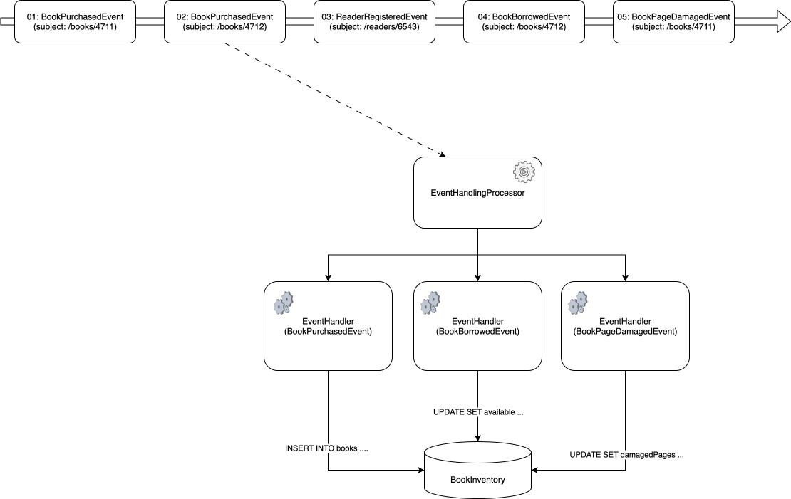
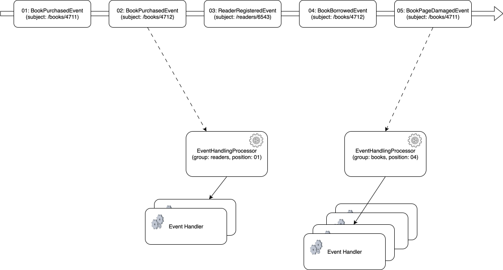

Event Handling Processor
The framework module provides EventHandlingProcessor
as the core component for asynchronous event handling. Once executed on a worker thread it
is responsible for dispatching any existing or newly published events in order to suitable EventHandler
instances for read model projection, as depicted exemplarily in the following diagram:

Multiple EventHandlingProcessor instances are typically configured and spawned for different sets
of grouped EventHandler instances. Each group then independently observes the event stream and processes
the events at its own speed. The EventHandlingProcessor tracks the progress of the last event -
successfully processed by its processing group - by means of a configured ProgressTracker.
Tip
A ProgressTracker implementation storing its progress within persistent
storage, such as a database, should be used to enable the EventHandlingProcessor
to continue after interruption or termination of its worker thread, for example after restart of the JVM.
The following diagram depicts two independent processing groups at different positions within the event stream:

Fail-Over and Horizontal Scaling
EventHandlingProcessor instances can be configured to
scale horizontally and provide suitable fail-over. Horizontal scaling is achieved by assigning
multiple instances to the same processing group using different partitions, effectively splitting up the event stream.
Event Processing Loop
Event processing (once started) comprises the following steps:
- determining the latest position (progress) within the global event stream up to which events have been processed previously for this group and partition, if available
- starting to consume and observe any newer events starting from that position
- upcasting and deserializing the event, if necessary
- determining if an event needs to be handled by this partition, otherwise skipping it because it is relevant for another partition
- determining and calling suitable
EventHandlerinstances, otherwise skipping the event because it isn't relevant for the processing group - retrying event handlers failing with non-persistent errors
- updating the progress within the global event stream, if all
EventHandlerinstances succeeded or the event was skipped - continuing with next available event, until the event processing loop is interrupted or terminated
Error Handling and Retry
Errors occurring within the event processing loop may either terminate the event processing loop or are subject to retry, according to the following criteria:
| Origin | Exception | Example | Behavior |
|---|---|---|---|
EventHandler |
NonTransientException or any sub-class |
event handler projection logic calling framework components throwing non-recoverable errors | processing loop terminated |
EventHandler |
any other java.lang.Throwable or sub-class |
any other application-specific exception thrown | event subject to retry |
| framework component(s) | TransientException or any sub-class |
recoverable errors such as connection errors while observing events | event subject to retry |
| any | java.lang.InterruptedException or java.util.RejectedExecutionException or any sub-class |
thread interruption while shutting down the EventHandlingProcessor |
processing loop terminated |
| framework component(s) | any other java.lang.Throwable or sub-class |
unexpected errors, for instance failure to update the progress | processing loop terminated |
In case of a recoverable error, events may be retried. In that case a configurable BackOff instance determines
the back-off delay, before the event is actually reprocessed. This delay may change (i.e. increase exponentially) for every retry attempt for the same event and
may as well signal the event to be skipped, if -1 is returned. Skipped events will no longer be retried and the event processing loop continues with the next
event, after updating its progress.
At-least-once Delivery and Event Handler Idempotency
Event processing logic contained within EventHandler instances is assumed to be idempotent, in
order to be retryable for a specific event. This is due to the fact, that, first of all, all relevant EventHandler instances
are retried, not only the one originally failing. Secondly, the event processing loop may terminate unexpectedly, before being able to update its
progress, which in turn will result in a repeated event handling for the event in question. The EventHandlingProcessor
effectively guarantees at-least-once delivery with respect to event handling.
Configuration
An instance of EventHandlingProcessor can be obtained,
either by manually instantiating and starting it (per group and partition) or using Spring Boot autoconfiguration.
Manual Configuration
An instance of EventHandlingProcessor can be created providing the necessary
configuration properties:
- the active partition number to be assigned to (starting from zero)
- the subject to observe for existing or new events published
- a flag indicating if the subject shall be observed
Recursiveor not - an
EventReaderinstance for observing events - a
ProgressTrackerinstance tracking the processing progress for the processing group and specified partition - an
EventSequenceResolverinstance to derive a sequence id from an event - a
PartitionKeyResolverinstance derive the assigned partition number from an event's sequence id - a list of
EventHandlerDefinitioninstances belonging the same processing group - a
BackOffinstance used to determine the back-off delay before retrying failed event handlers
The following example shows, how to instantiate and start an EventHandlingProcessor using
a provided EventReader and a list of EventHandlerDefinition
(containing the event handling logic). The example applies the following additional configuration settings:
- a single partition (
0) is used to handle all events (DefaultPartitionKeyResolverwith1active partition) - events sharing the same subject are processed sequentially (
PerSubjectEventSequenceResolver), which is irrelevant as long as only one active partition is used - events are observed from the root subject
/recursively - progress is tracked in-memory, i.e. all events will be reprocessed upon restart of the JVM (
InMemoryProgressTracker) - events will be retried infinitely with a static back-off interval of 1000 ms
import com.opencqrs.framework.eventhandler.partitioning.DefaultPartitionKeyResolver;
import com.opencqrs.framework.eventhandler.partitioning.PerSubjectEventSequenceResolver;
import com.opencqrs.framework.eventhandler.progress.InMemoryProgressTracker;
import com.opencqrs.framework.persistence.EventReader;
import java.util.List;
public class EventHandlingProcessorConfiguration {
public static EventHandlingProcessor eventHandlingProcessor(
EventReader eventReader,
List<EventHandlerDefinition> eventHandlerDefinitions
) {
return new EventHandlingProcessor(
0,
"/",
true,
eventReader,
new InMemoryProgressTracker(),
new PerSubjectEventSequenceResolver(),
new DefaultPartitionKeyResolver(1),
eventHandlerDefinitions,
() -> () -> 1000
);
}
}
The EventHandlingProcessor can be verified by starting it asynchronously as follows:
public static void main(String[] args){
var eventHandlingProcessor = eventHandlingProcessor(...);
new Thread(eventHandlingProcessor).start();
}
Spring Boot Auto-Configuration
For Spring Boot applications using the framework-spring-boot-starter module
EventHandlingProcessorAutoConfiguration provides
fully configured EventHandlingProcessor Spring beans per
processing group for all EventHandlerDefinition Spring beans
defined within the same Spring application context.
The processor beans can be fully configured using EventHandlingProperties.
The configuration provides suitable defaults, which may be overridden for all processing groups and/or per individual processing group,
e.g. as follows:
# settings applying to all processing groups
opencqrs.event-handling.standard.retry.policy=exponential_backoff
opencqrs.event-handling.standard.retry.max-attempts=5
# settings applying to processing group 'books' only
opencqrs.event-handling.groups.books.fetch.subject=/books
opencqrs.event-handling.groups.books.life-cycle.partitions=2
# settings applying to processing group 'backup' only
opencqrs.event-handling.groups.backup.life-cycle.auto-start=false
With that configuration in place autoconfigured EventHandlingProcessor instances
will be configured for all processing groups (based on the EventHandlerDefinition beans within the Spring context) as follows:
- all failed events will be retried up to 5 times with exponentially increasing delays
- all processors, except those for the 'backup' processing group, will be started automatically
- all processors, except those for the 'books' processing group, will observe events from
/recursively - for the 'books' processing group:
- events will be observed from
/booksonly - two processor instances will be spawned each of them processing one of the two configured partitions independently
- events will be observed from